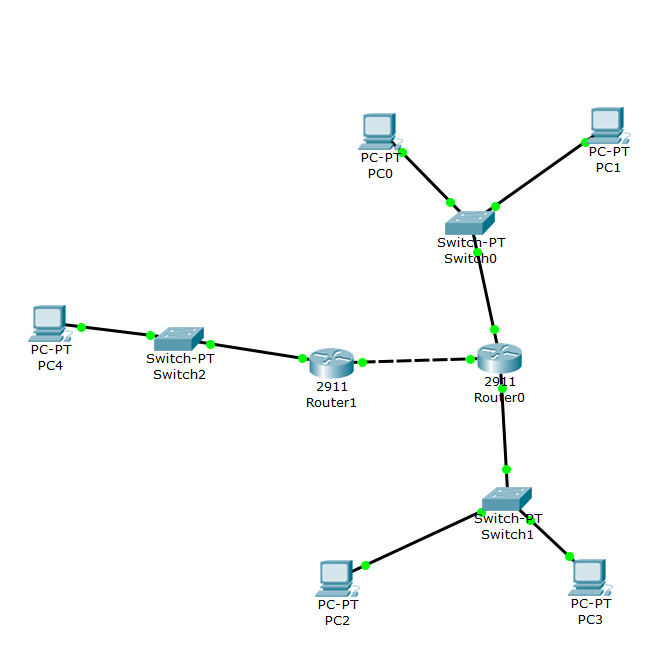

Личная страница Германова Никиты
"Лабораторные работы"
Задачи:
- Зарегистрироваться на github.com
- Создать персональную веб страницу-отчет с использованием html, css. Личная страница
- Загрузить персональную веб страницу-отчет в репозиторий ИДМ-17 по курсу "Интернет-технологии" на GitHub.(Папка с исходными кодами в репозитории)Личная страница
Требования к приложению:
- Приложение должно представлять из себя клеточный автомат, вариацию игры "Жизнь", но с несколькими видами клеток, каждый со своими уникальными правилами.
- Приложение должно обеспечивать динамическую загрузку файлов конфигураций в формате JSON с помощью асинхронных запросов в серверу.
- Приложение должно быть локализовано на русский и бирманский (мьянманский) языки.
Задачи:
- Собрать команду для разработки веб-приложения (SPA) и распределить роли Страница команды
- Создать персональную страницу по макету. Исходный код для html: html code
- Прописать стили страницы. Исходный код для csscss code
- Прописать JavaScript-функционал и реализовать возможность чтения JSON/XML. Исходный код на JavaScript и JSON (конфигурации, переводы).
Настройка коммутаторов и маршрутизаторов.
-
Цель данной работы – ознакомиться с принципами работы компьютерных сетей, базовой настройкой сетевого оборудования и статической маршрутизацией.
| LAN A | LAN B | LAN C | |
| 137 | 30 | 37 | |
| Префиксная маска | /26 | /25 | /22 |
| Адрес подсети | 192.168.7.0 | 172.16.5.0 | 10.10.7.0 |
| Минимальный адрес | 192.168.7.1 | 172.16.5.1 | 10.10.5.1 |
| Максимальный адрес | 192.168.7.62 | 172.16.5.126 | 10.10.9.254 |
| Broadcast | 192.168.7.63 | 172.16.5.127 | 10.10.9.255 |
| Устройство | IP | Маска | Шлюз по умолчанию |
| PC0 | 192.168.7.12/td> | 255.255.255.192 | 192.168.7.1 |
| PC1 | 192.168.7.11 | 255.255.255.192 | 192.168.7.1 |
| PC2 | 172.16.7.126 | 255.255.255.128 | 172.16.7.1 |
| PC3 | 172.16.7.125 | 255.255.255.128 | 172.16.7.1 |
| PC4 | 10.10.7.254 | 255.255.252.0 | 10.10.7.1 |
| Router0 FastEthernet 0/0 | 192.168.7.1 | 255.255.255.192 | – |
| Router0 FastEthernet 1/0 | 172.16.7.1 | 255.255.255.128 | – |
| Router0 FastEthernet 6/0 | 15.15.7.1 | 255.255.255.252 | – |
| Router12 FastEthernet 0/0 | 15.15.7.2 | 255.255.255.252 | – |
| Router12 FastEthernet 1/0 | 10.10.7.1 | 255.255.252.0 | – |


Задачи:
- Самооценка прохождения теста по инновациям, формулировка одного вопроса по теме "Интернет-технологии" в одной из форм, встречающихся в тесте (выбор одного, выбор многих, упорядочивание, соответствие).
- Прикладной
- Представительский
- Сеансовый
- Транспортный
- Сетевой
- Канальный
- Физический